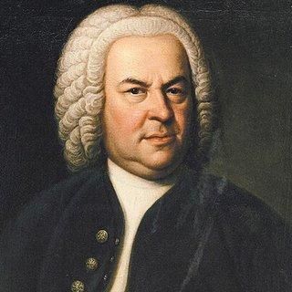

作曲家 › ヨハン・ゼバスティアン・バッハ

ヨハン・ゼバスティアン・バッハ
バロックの大巨匠。オルガニストで教師、そして20人の子どもの父。今もすべてのピアニストが学ぶ音楽を書きました。
生涯
ドイツのアイゼナハで音楽家の一族に生まれました。10歳で両親を亡くし、鍵盤楽器を教えてくれた兄のもとで育ちます。
ドイツ各地でオルガニストや楽長として働き、1723年から亡くなるまでライプツィヒの聖トーマス教会のカントルを務め、毎週礼拝のための音楽を書きました。
生前はおもにオルガニストとして尊敬されていましたが、死後その音楽はほとんど忘れられました。1829年にメンデルスゾーンがベルリンで『マタイ受難曲』を指揮し、バッハを音楽史の中心に呼び戻したのです。
肖像：Elias Gottlob Haussmann (1748)、パブリックドメイン、出典 ウィキメディア・コモンズ。

エピソード
- 1705年、20歳のとき、有名なオルガニストのブクステフーデを聴くため、アルンシュタットからリューベックまで約400kmを歩いて旅しました。
- 『平均律クラヴィーア曲集』（1722年）には24のすべての調で前奏曲とフーガがあります。新しい調律ならどの調でも弾けることを示すためでした。
- 『2声のインヴェンション』は、息子ヴィルヘルム・フリーデマンに弾き方を教えるための練習曲として生まれました。
ピアノで弾くとき
- バッハの時代にはまだピアノがなく、チェンバロやクラヴィコードで弾かれていました。ペダルはほとんど、または全く使いません。
- 左右の手がそれぞれ別の旋律を歌います。片手ずつ、それぞれが一人で立てるようになるまで練習しましょう。
- 音量よりもアーティキュレーション（レガートとスタッカート）を大切に。
練習できる曲 2曲

Piano Learning で一音ずつ覚えよう
「音を待つ」モードでは、正しい鍵盤を弾くまで曲が止まります。スマホでも、自宅のピアノでも（アプリが音を聴き取ります）。片手ずつ練習、速度は10%から、楽譜はいつも目の前に。
Google Play で無料ダウンロード ラ・カンパネラ、トルコ行進曲、ジングルベル、フレール・ジャックと同じく無料。ほか数百曲も一度の購入で、サブスクなし。